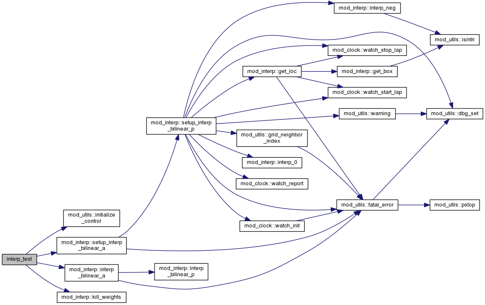

bilinear.F File Reference
Functions/Subroutines | |
| program | interp_test |
Function/Subroutine Documentation
| program interp_test | ( | ) |
Here is the call graph for this function:

Functions/Subroutines | |
| program | interp_test |
| program interp_test | ( | ) |
 1.8.11
1.8.11